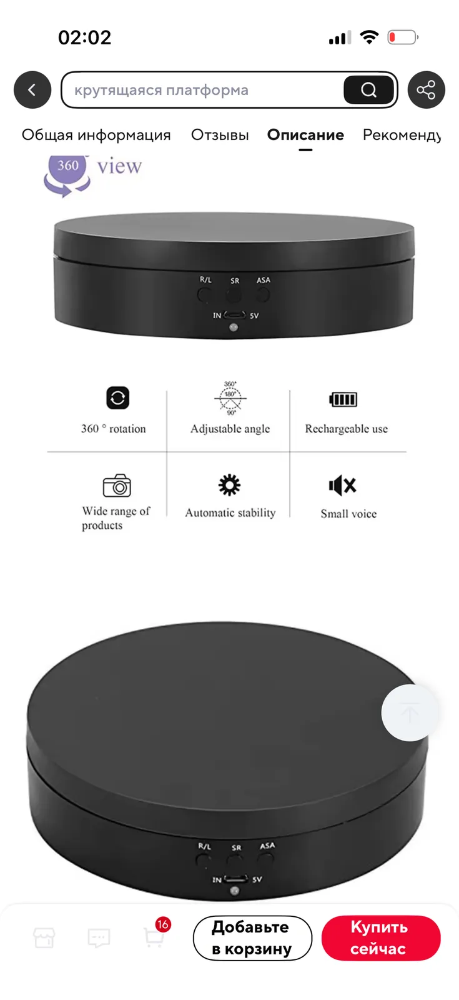
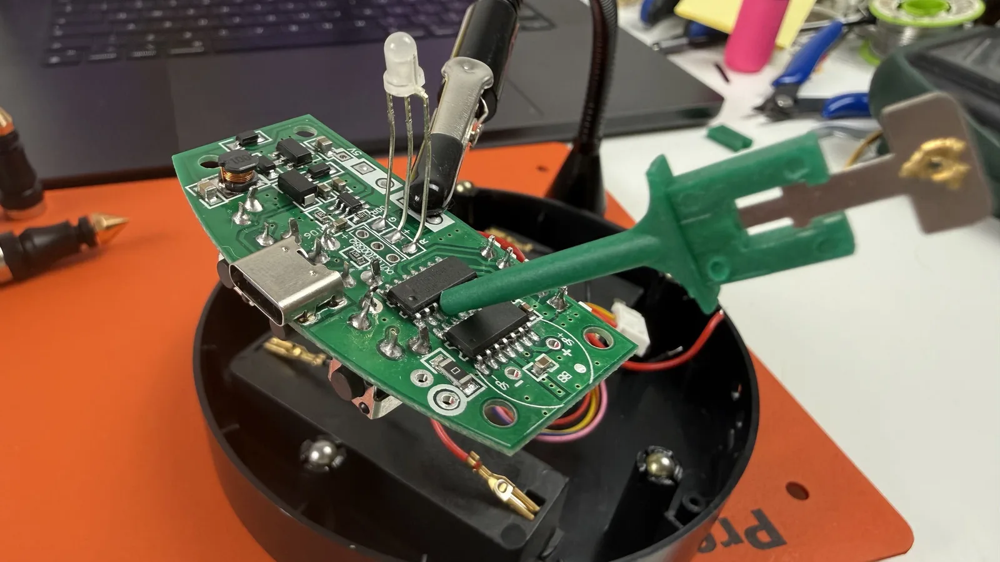
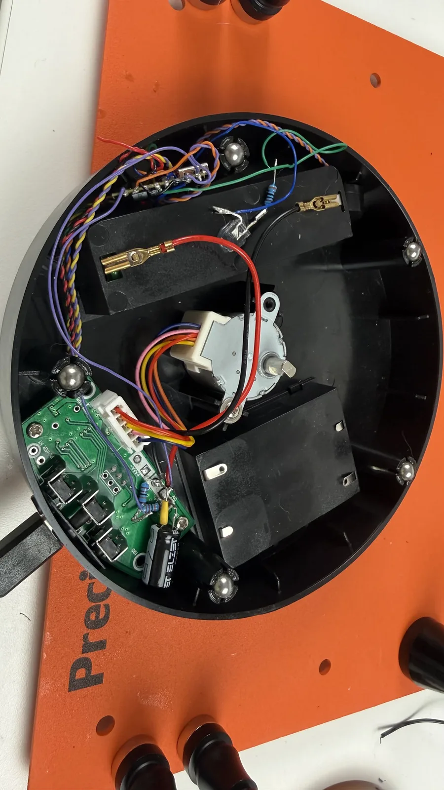

← все заметки
28.08.2026#слайдер #электроника
Буквально на коленке, в пределах дня, смог модернизировать китайский столик для предметки — теперь им можно управлять моим пультом. Столик примерно такой:
Сначала я думал целиком заменить всю начинку, кроме мотора, но сохранить панель управления. А вечером подумал, что могу убить кучу времени на подгонку внутренностей к панели. Решил разобраться в устройстве платы — всем рулил контроллер с затёртой маркировкой. На фото — под щупом.
Кроме того, в устройстве уже есть многое из того, что я хотел добавить в проект: тракт зарядки, повышайка напряжения, отсек для аккума 18650.
Получилось в итоге что-то такое. Явно буду дорабатывать, но уже можно пользоваться. Внешне столик тот же, но управляется по Bluetooth.

Сначала я думал целиком заменить всю начинку, кроме мотора, но сохранить панель управления. А вечером подумал, что могу убить кучу времени на подгонку внутренностей к панели. Решил разобраться в устройстве платы — всем рулил контроллер с затёртой маркировкой. На фото — под щупом.

Кроме того, в устройстве уже есть многое из того, что я хотел добавить в проект: тракт зарядки, повышайка напряжения, отсек для аккума 18650.
Получилось в итоге что-то такое. Явно буду дорабатывать, но уже можно пользоваться. Внешне столик тот же, но управляется по Bluetooth.

Комментарии